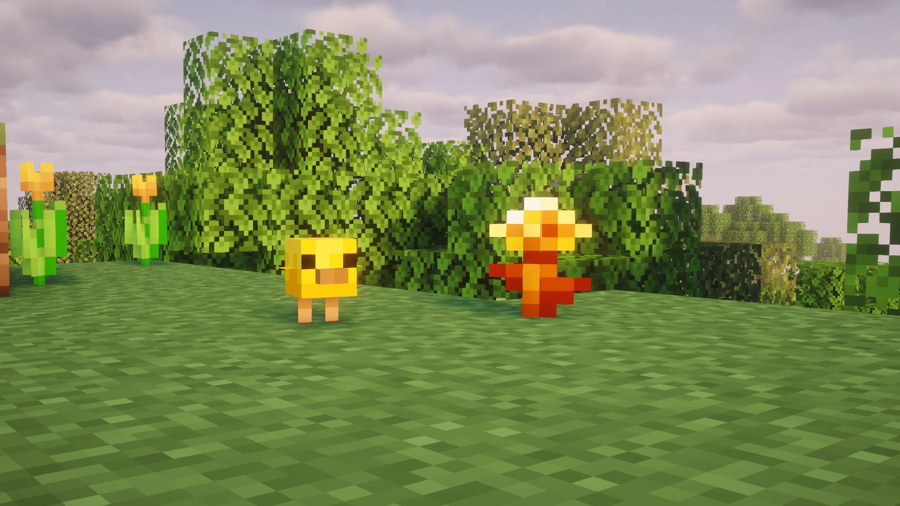
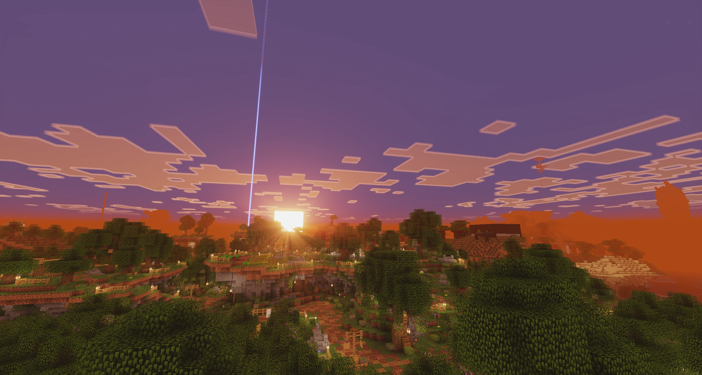
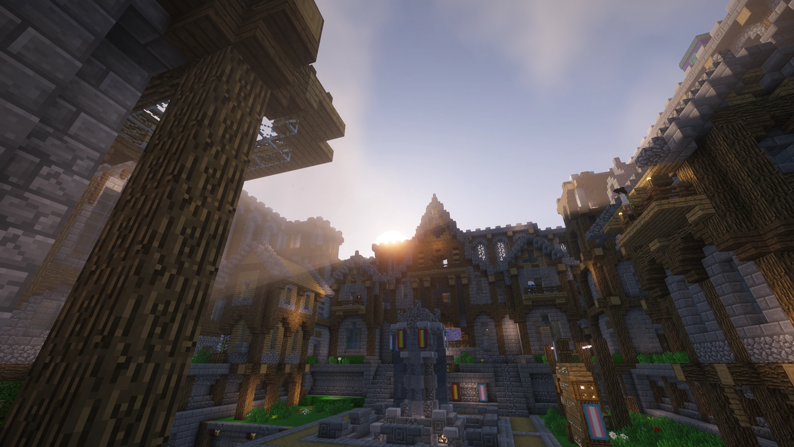
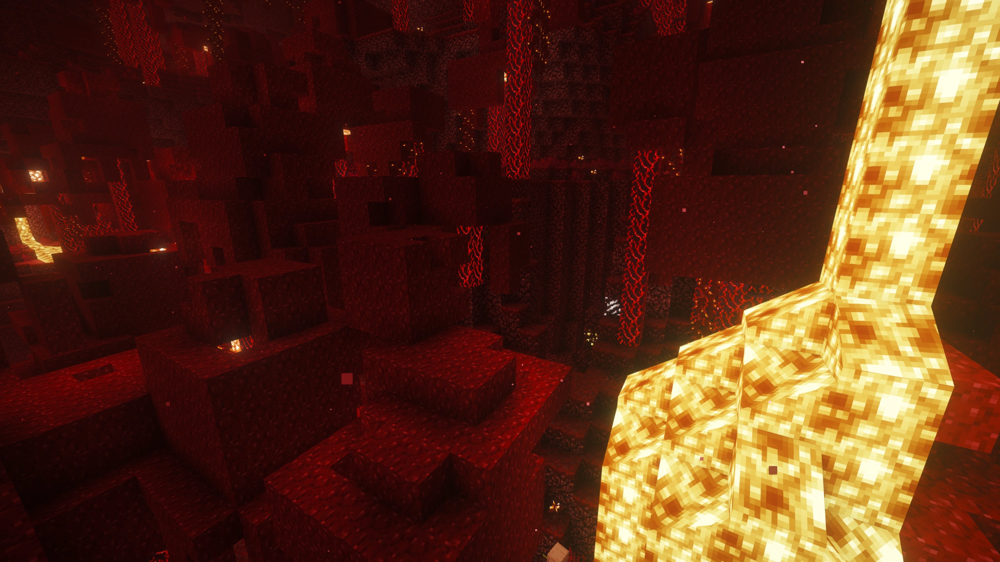
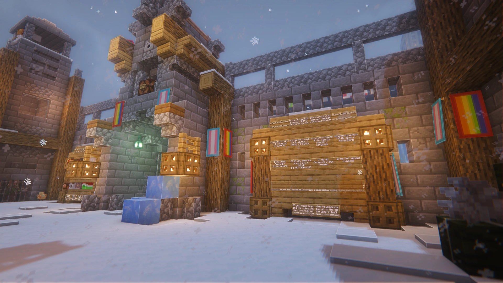

SMP Updates / Changelogs:

Title Update 15 - Tiny Takeover!
After working on the server and making sure it all runs well, we are now officially on version 26.1!
Major Changes:
- Baby Animals:You can now tame and raise your own baby mobs, including (but not limited to): Cows, Mooshrooms, Sheep, Pigs, Cats, etc
- Golden Dandelion: Keep your baby mobs small forever!
- Craftable Nametags: Self explanatory... but still cool!
- Return of the Mining Dimension: We have fully reset the mining dimension and enabled rtp again!
- Removed Herobrine.

Title Update 11 - Good Morning!
This update includes a return of a few features, and a bit of some new features!
Major Changes:
- The return of the SMP Mining Dimension: which now you can teleport through spawn or using the warp command!
- The return of Chat Filtering: Using a improved version, this is less restrictive but will prevent slurs, inappropriate symbols and racist comments.
- Bedrock Legacy Resource Pack: Bedrock now have a resource pack that can load in to feel like in the legacy edition of the game!
- Camera Obscura: Be able to take photos of cool builds!
- Lava Walker: Lava Walker is a treasure enchantment; it can be obtained via villager trading - which lets you walk on lava!
- Healing Campfire: Creates an area around the (soul) campfire where players and passive mobs receive regeneration.
Bug Fixes:
- Java Resource Pack optimisations.
- Updated bound (which should fix the /back issue)
- Java Resource Pack optimisations.
- Major Spawn holes are patched
- Chat validation errors should be fixed.
- AFK timeouts are now set to 1 hour.
- Removed Herobrine.

Title Update 10 (and 9) - Spawn overhaul
This update includes a brand new spawn, and all of the features from the new 1.21.11 minecraft update!
Major Changes:
- A completely new spawn area: much bigger and with lots of hidden easter eggs!
- Server software update: including all of the features unique to the 1.21.11 minecraft update!

Title Update 8 Update - Bugfix Update
This update includes a lot of bugfixes, and creates some bugs...
Major Changes:
- Major resource pack updates, bringing some of our old textures to be even older!
- New Skinpack Changer! Press Shift + F to open the menu and set your skin to the default Legacy Skinpack!
- New Bugged Lamp Block, can be created by using 2 pistons on one redstone lamp block.
- New Server Restart Countdown.
- Sugarcanes are now bonemeal-able.
- Major optimisations to the Resource Pack, removing unessesary sound files.
- Removing the texture pack on the SMP will now not remove the TARDIS Model and the Santa Hat Model.
- Many modern textures are now consistant with classic textures (An example is netherack).
Bug Fixes:
- Bed item models used to show their 3d model but only the bottom face.
- Renamed the "Poppy" back to "Rose".
- Removed Herobrine.
- The resource pack on bedrock wouldn't install for their side.

Title Update 7 - The Major Update
This is our first massive leap in the Legacy SMP Era, to push it into the max for players to enjoy the old style gameplay! Throughout it's lifespan, we'll continue to expand the Legacy Theme throughout updates but for now we hope you'll enjoy the SMP!
Major Changes:
- New IP movement from a numeric IP to legacy-smp.uk
- New Bluemap site (this will allow you to view the SMP and the positions of players on a website).
- SMP now will default the player with a Legacy Console Edition themed resource pack (this can be disabled with /resource-packs).
- A variety of Legacy's DLC Resource Packs (Continued by BrandonItaly) is available in the /packs, /resource-packs, /rp and /dlc commands (some resource packs will require you to unlock an achivement before allowing you to equip it).
- Major parity features from Legacy Console Edition.
- Players will have access to the /inspector command in which allows users to check the information of a block (Item Taken, Block Broken, etc).
- Massive transition from Essentials Commands to Fugi (This is going to be a new mod in which will allow us to have more stable commands).
New Commands (Fuji):
- New utility commands (/workbench, /enchantment, /anvil).
- New bed command (/bed).
- New head shop (/headshop).
- Updated warp commands (Now have GUI's).
- New /pvp command which players can disable pvp for them selves.
Bug Fixes:
- Fixed a long going issue where using /back will cause you to send you to extremely high position randomly than your last location.
- Fixed a issue with spawn where you could break stuff at spawn.